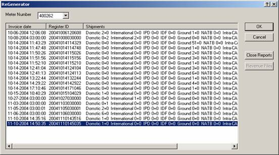

Reprinting a FedEx Manifest
This procedure will allow you to reprint a FedEx manifest document.
The FedEx utility "Report/Revenue ReGenerator" provides the
ability to regenerate the revenue file produced after a ‘Close’ operation
or to reprint a set of ‘End of Day’ reports.
Procedures...
- Select Start
| Programs | FedEx Ship Manager Server | Utilities | ReGenerator,
and the following window will be displayed:

- Select the appropriate
manifest/invoice date for which you wish to generate the revenue
file or End-Of-Day reports.
- To
generate the revenue files, click the Revenue Files button.
- To generate the End-Of-Day reports,
click the Close Reports button. The
reports will be released to a printer or placed in a directory based on
the Meter configuration.
- Click Cancel
to close the application.